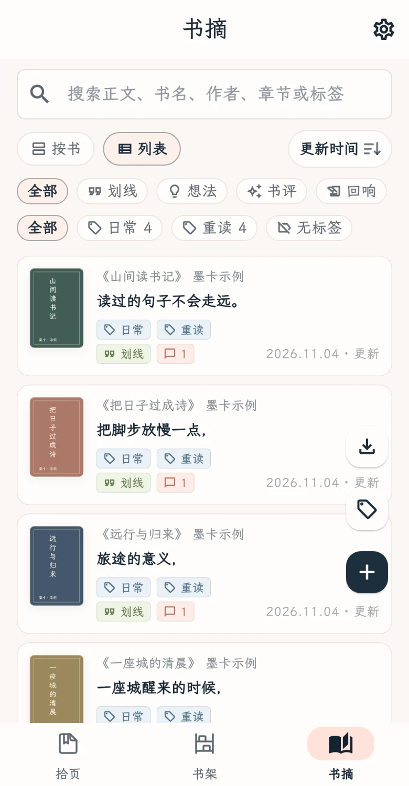
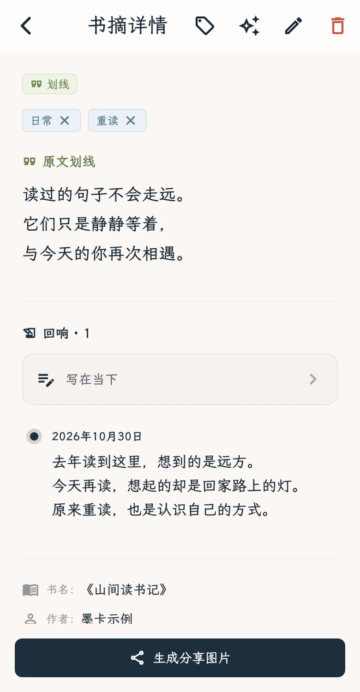

从几本书开始
书架很满，
这次只整理想看的。
在同步清单里选中书籍，再导入划线、想法和书评。微信读书书架里的其他收藏仍留在原处。
要找一条笔记时，可以按书、标签或关键词查找；回到某本书，也可以按章节顺序重新读一遍。
查看微信读书连接说明 ↗回响
原来的书摘，
和后来写的笔记。
重读时有了不同的理解，就在那条书摘下面补一条“回响”。可以写很多次，也可以修改或删除。
不用另开一篇笔记，也不用改掉当初的想法。回到书摘详情，就能一起看到。

拾页
不找某一句，
也可以翻翻以前读过的。
拾页按日期带出过去的书摘，保留书名和摘录时间。读到有感触的内容，可以打开详情，继续写下想法。
想把其中一段发给朋友，也可以排成分享卡片，选择布局、背景和文字后保存图片。
开始用之前
这里展示的是 0.6.1 示例界面。不同平台的功能和发布进度可能不同，安装前请查看下载页。
记录放在哪里？
核心书摘和资料库默认保存在本机。可以导出文件备份；Apple 设备还可以选择个人 iCloud 备份。
需要连接哪些服务？
手动记录不需要连接微信读书。导入微信读书内容、使用智能整理时，才会涉及相应第三方服务。
数据与隐私说明 ↗下载墨卡
选择适合设备的版本，查看安装与更新说明。